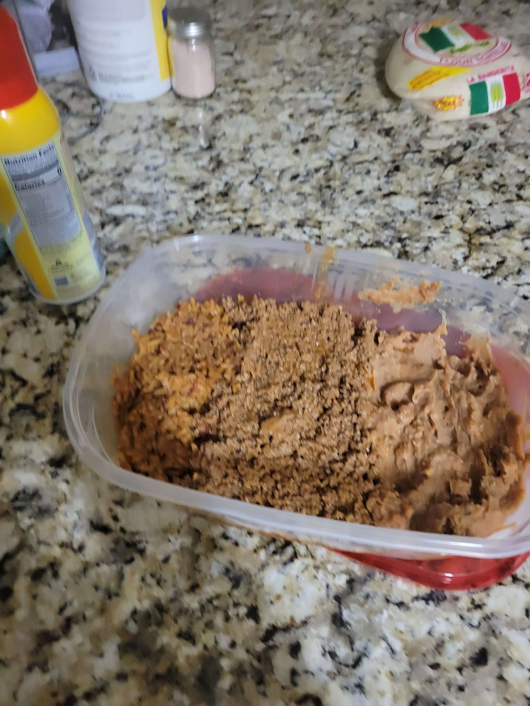

Simple Taco Fillings

A hearty combination of savory seasoned ground beef and creamy
refried beans.
Instructions:
Brown 2 lbs of ground beef in a skillet over medium-high heat,
adding seasoning and water as directed by seasoning package; drain
fat, then stir in refried beans until hot.
Ingredients
- Canned Refriend Beans
- Ground Beef
- Taco Seasoning
Equipment
- Skillet
- Stove
- Can Opener
- Something to stir with idk
Home